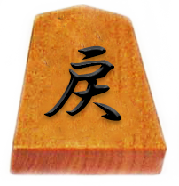

将棋駒の解説Flashゲーム
王将 将棋の駒の名称。「玉将」と同じ働きをするが、大局将棋の場合だけ太子の成駒として存在する。
玉将 将棋駒にはもともと「玉将」しかなかったようである。平安将棋には「玉将」はあるが「王将」はない。 しかし、字体の類似も相まっていつの間にか「王将」も使うようになったと言われている。
銀将 通称は「銀」。本将棋では金将とともに防御を担う一方、棒銀戦法、腰掛け銀など攻撃にも参加させやすい駒であり、また金将に次いで詰め、寄せに欠かせない駒となっている。
